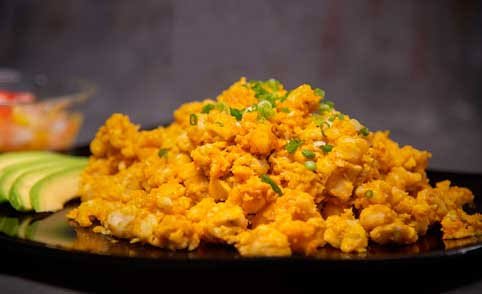

Sabores de Cuenca
La gastronomía cuencana forma parte de la identidad cultural de la ciudad. Entre sus platos tradicionales se encuentra el mote pillo, una preparación que permite acercarse a los sabores locales y conocer otra parte de la experiencia de visitar Cuenca.
